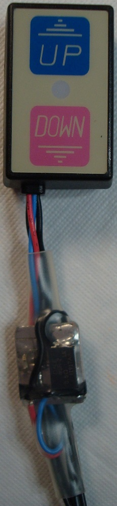

A "Motion" Indicator for the Diamond K9000 (and other motorized devices)
Updated 10/12/2020
(Back to the Projects page...)|  |
|
|
Penumbra: The What and Why...
|
The K9000 mount's motor (see Figure 1) is controlled by reversing the voltage (approximately 13.8Vdc) on the leads to the
motorized mount. Limit switches inside the mount control the stop-action of the motor and diodes
across these switches allow motion in the opposite direction from that which activated the limit switch.
This configuration allows for a simple "open-loop" controller that requires just two wires and no complex circuits.
The starting current for the motor is in excess of 1 A, but the running current is something like 400 mA
(give or take). The sample resistor can drop a fair amount of voltage while still allowing the motor to
move (albeit a bit more slowly). I ultimately settled on 0.5 ohms as a middle ground between I-V gain
and I-R loss.
Figure 1. The K9000 Motorized Mount. But first, there were a couple of incarnations of the circuit. Originally, I used half of a dual op-amp to amplify the voltage across a high-side, 0.8 ohm, sample resisor and the other half to perform a comparator detection on the result. This worked, somewhat, but I wanted a simpler circuit. The TL331 is a small comparator that can operate at up to 36V with a 20mA drive capability. I found that it was possible to fashion a hysteresis circuit to allow for a wide hysteresis range with reasonable adjustment range on the thresholds. This both simplified the circuit and improved its operation. For those not familiar with hysteresis (see Figure 2 for an example of a hysteresis plot), it is simply a condition whereby two different thresholds are used based on the output state of the circuit (hysteresis can also apply to other phenomena, but here, I am only discussing it as it pertains to comparators). The idea is to move the threshold away (higher or lower, depending on the nature of the circuit) such that it becomes "more difficult" to return to the previous state. For example, Imagine that there are two thresholds, one at 1V and another at 2V. When the output is at a low state, the 2V threshold is selected. As the positive input increases past the 2V point, the output changes state and the 1V threshold is then selected. Now, the positive input must fall below 1V before the circuit returns to the original state. This greatly improves the noise immunity of the comparator and is crucial to prevent "chatter" on the output. Figure 2. An example of a hysteresis "loop" A comparator is really just a differential amplifier what is optimized to compare two inputs. They generally feature high (open-loop) gain and an open-collector or open-drain output. Thus, the output of a typical comparator generally only has two valid states: OPEN and GND (the TL331 used herein is no exception to this "rule"). However, like a traditional differential amplifier, the comparator drives it's output the same way: it's output tries to drive the "-" input towards the voltage seen at the "+" input. Thus, if the "-" input voltage is less-than the "+" input, the output is OPEN (which, for most comparators, is assumed to be a high voltage because a pull-up resistor is placed there). If the "-" input voltage is greater-than the "+" input, the output is GND. Hysteresis is a positive-feedback phenomena. Whereas most linear amplifiers employ negative feedback to achieve stable gain, comparator circuits generally utilize positive feedback to "trick" the circuit into moving the positive input voltage based on the state of the output. The easiest way I've found to design and analyze hysteresis is to write down two different schematic models of the circuit, one for the output = open state and one for the output = GND state. Figure 3 illustrates a simple comprator circuit broken into it's two states. Figure 3. Comparator "OPEN" and "GND" equivalent circuits As can be seen by inspection, the "+" input will be different in each state because the pull-up resistor is grounded-out when the output is GND. Also note that the "Vref" and "Vin" signal names can be exchanged such that the output polarity of the comparator matches the desired operation. The Kirchhoff's Voltage Law (KVL) equations are as follows: V(+)open = (Ri * (Vcc - Vref)/(Ri + Rf + Rpu))) + Vref V(+)gnd = Vref * ( 1 - (Rf/(Rf + Ri))) As can be readily seen, there are a lot more than 2 unknowns. Whenever there are more unknowns than equations, a closed-form solution is not possible. Fortunately, some of these "unknowns" are constrained for us, while others generally yield to a rough guess. Vcc, for example, is generally dictated by what is available or by the circuit down-stream from the comparator. Other unknowns may be constrained by "rule-of-thumb" choices. Rpu is generally chosen to be on the order of 1K to 50K ohms with 10K as the nominal choice. Rf should be as large as practical with values in the 100K to 1M ohms range being typical (a high value for Rf helps keep the gain of the compaarator high). The threshold values (V(+)open and V(+)gnd) are generally dictated by the application. With these ideas set forth, it is usually a simple matter to get the math down to two equations with two unkowns which can then be easily solved. While spice simulation tools are readily available, I generally prefer to use a spreadsheet to simulate the comparator operation. I enter the equations for each version of the circuit (typically, side-by-side) and provide "hacking" cells with the component and circuit values. I'll then manually adjust the respective cells and observe the result. In short order, I can usually narrow in on the resistor values I need to get the desired thresholds to function as required. It is also possible to graph a solution across a range of input values (my spreadsheet, linked at the bottom of this page, features both methods). This circuit cannot be placed in the leads to the antenna mount, as those leads see a polarity reversal depending on the direction of the motor. In the main power lead, there is some overhead current in the LED and possible leakage sources, so the comparator needs to have a threshold higher than 0V to get it back into the "Vout = OPEN" state. As well, the current level required to place the comparator into the "Vout = GND" state needs to be something like half the nominal load current while the motor is moving so that the comparator LED is not falsly activated by noise. I chose 20mA for the low threshold to account for the Diamond Control Module LED, and about 200mA as the "motor on" threshold. Using the spreadsheet I created, I was able to determine values for the feedback resistors using a 2W, 0.5 ohm sense resistor (a Vishay WSR2R5000FEB SMD resistor), a lower limit of 20 mA and an upper limit of 200 mA (see the schematic at the end of this page). Actual testing gave values of between 26 and 37 mA for the lower threshold, and about 240 mA for the upper threshold...close enough. High-Side vs. Low-Side (sensing)The HOW...
Small proto PCBs (mostly from China) are cheap and easy to come by as of this writing. However, I still will cobble together a hand-wired
prototype on occasion, if just for practice. In truth, I can usually have a simple prototype operational within a
couple of hours. Unless I'm gunna make a lot of a thing ("a lot" is generally anything more than 1), this is how I'll
make it happen. The images below illustrate the assembly of the circuit. Note that these images anre not necissarilly
from the "final" version and are offered for illustrative effect.
First, I pencil-sketch the pattern I want to cut. I put pencil direct to the copper using actual components in most cases.
Once I have all of the cuts penciled down, I will start slicing the copper with an Exacto knife. I can reliably carve
with 10mil traces and 10 mil spaces. Anything less than that is also possible, but gets to be more difficult. Copper
is very soft and plyable. As such, it will distort as the result of the carving. This leaves burrs and "threads" which are
cleaned up by the blunt edge of the Exactor blade. Then, I use water-clean flux to solder-tin the surface. This image is
after the carving, deburr, and tinning have taken place:
|
Motor Current Sense Circuit. Umbra...Some related links: TL331 Datasheet Diamond Motorized Antenna Mount Analog Devices LTSpice tool Comparator Component Calculator (Excel file) |